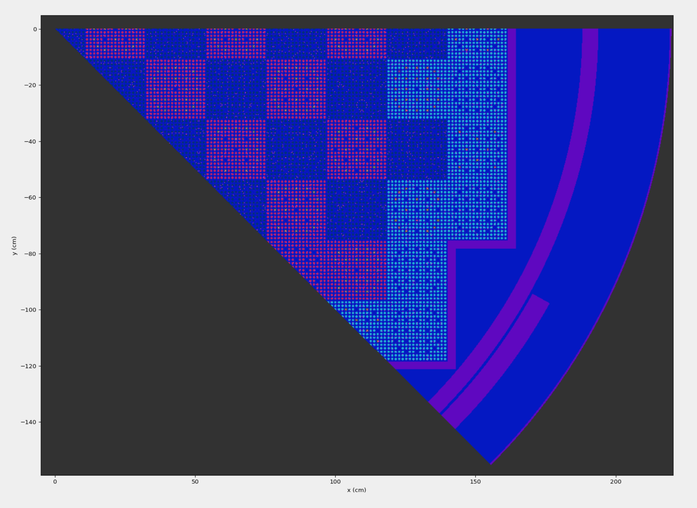
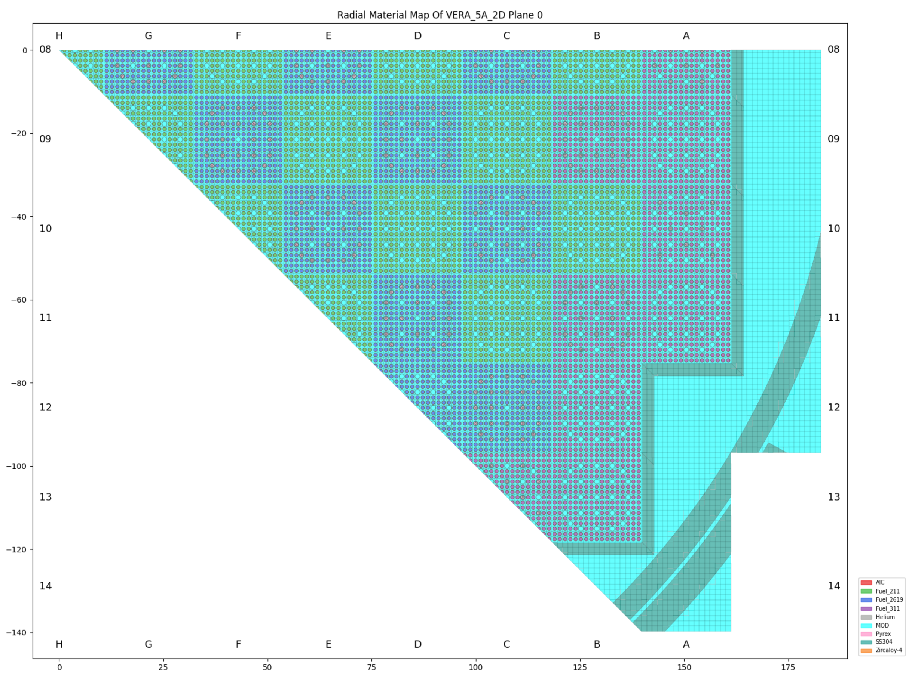
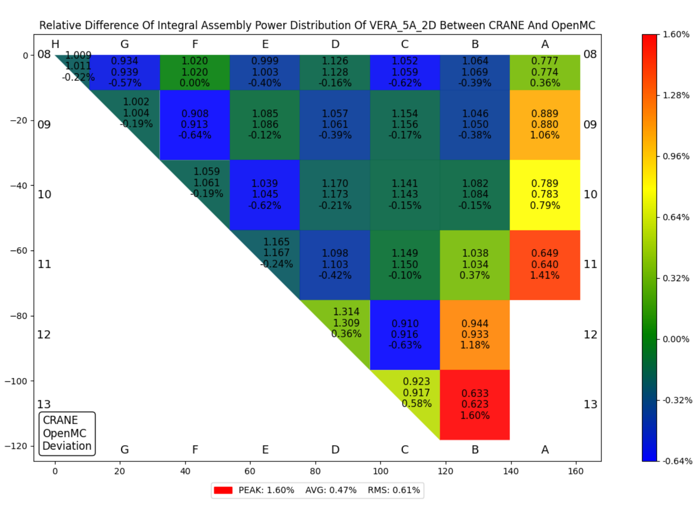
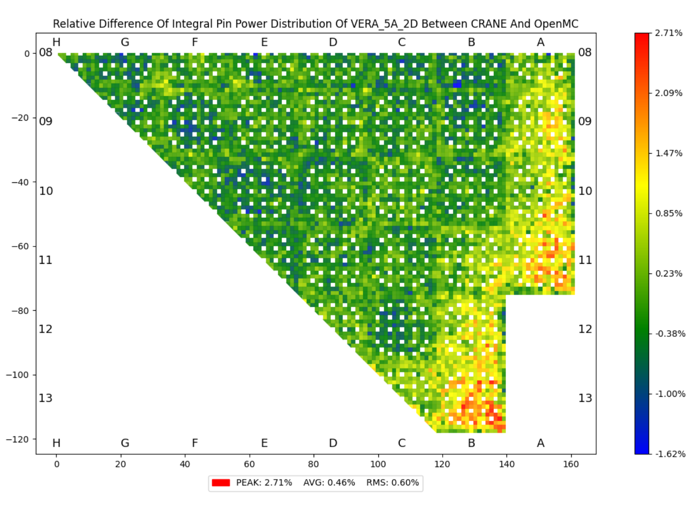
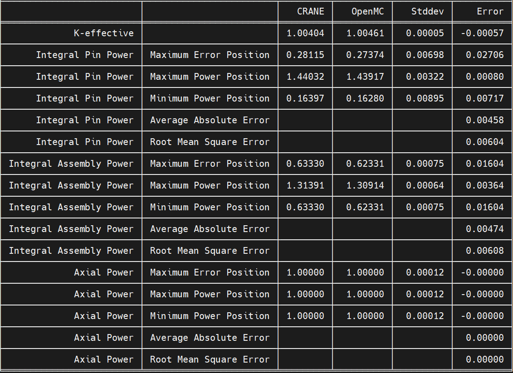

13. OpenMC 接口¶
OpenMC 是近些年由麻省理工大学开发的开源蒙卡软件， 该软件能够对复杂三维模型进行固定源、k-本征值问题等不同的类型的中子输运计算，同时兼具燃耗计算的功能。
由于其开源的特性，其社区群体、高校用户都增长较快，CRANE开发团队也用OpenMC进行程序验证工作。
为了能够方便的同时使用CRANE和OpenMC两个程序，我们开发了CRANE与OpenMC的接口模块， 其主要功能包括两部分：
将CRANE模型自动转换成OpenMC模型，产生OpenMC的计算输入；
计算完成后，抓取OpenMC的结果，用于和CRANE进行比较并可视化。
Note
目前与OpenMC的模型转换功能只支持不带热工水力反馈的问题，可进行状态参数不变的燃耗计算，但不支持序列计算。
Note
能够使用CRANE的OpenMC接口功能的前提是环境中已经安装有OpenMC，且对OpenMC计算所需的数据库等信息已经配置完成。
13.1. 生成 OpenMC 输入并执行计算¶
首先在CRANE的输入文件中定义 to_openmc 对象。
这里我们以两维堆芯问题 VERA_5A_2D 为例，我们在其输入文件中增加该部分输入：
to_openmc:
openmc_settings:
batches: 2000
inactive: 500
particles: 200000
然后直接执行以下命令：
crane to-openmc VERA_5A_2D.yaml
就能够基于CRANE模型自动生成OpenMC的计算输入，并直接驱动OpenMC计算。详细命令行功能见 crane to-openmc。
Note
执行 crane to-openmc 命令后，CRANE会创建一个名为 name + __openmc 的文件夹，
OpenMC所有的输入文件都在该文件夹内。
利用 openmc plotter 工具对上述命令产生OpenMC模型进行可视化：
{kind=link}

而利用CRANE的 plot-model 命令也可对 VERA_5A_2D 基准题进行可视化：
{kind=link}

可见两者的模型是一致的，只是CRANE模型的边界为活性区向外拓展若干个组件宽度（通过 num_assembly_layers_reflector 控制，默认为一个组件），而OpenMC的模型边界为反射层结构体定义中的最外围的 primitive 对象。
实际上，从CRANE的模型转换至OpenMC模型的过程主要包含两部分，材料和几何。
对材料来说，若是宏观截面给定材料，CRANE会根据宏观截面数据直接产生OpenMC的MGXS，若是真实材料， CRANE会计算出每种材料所包含的所有核素的核子密度数据，利用该数据进行OpenMC的材料建模。
对于几何来说，CRANE会根据用户输入的逐步产生OpenMC几何建模需要的从Region到Universe的各个数据， CRANE与OpenMC在几何建模对象上的对应如下：
CRANE |
OpenMC |
|---|---|
|
|
|
Note
OpenMC燃耗计算所需要的体积数据是由CRANE的几何模块计算获得的。
13.2. 对计算结果进行比较和可视化¶
采用CRANE的 crane to-openmc 功能进行OpenMC的模型产生和计算时，默认会产生统计三维组件功率分布的 tallies，因此OpenMC计算完成后，除了比较特征值， 还可以比较组件功率分布、轴向功率分布等。
类似于比较两个CRANE的结果，我们可以用 crane visualize 命令来比较CRANE的 HDF5 结果文件 和OpenMC的 statepoint file。
如执行以下命令：
crane visualize VERA_5A_2D.h5 VERA_5A_2D__openmc/statepoint2000.h5
进入到CRANE的可视化交互式命令行环境，然后执行命令：
plot-power-distribution --power-type assembly-integral
就可以比较CRANE与OpenMC的组件功率分布：
{kind=link}

若执行命令：
plot-power-distribution --power-type pin-integral
就可以比较CRANE与OpenMC的棒功率分布：
{kind=link}

或者直接执行命令：
print_power_distribution_comparation
可打印出CRANE与OpenMC的结果比较的汇总表：
{kind=link}
